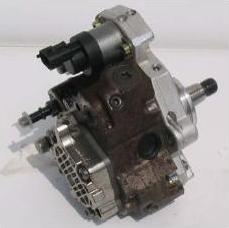
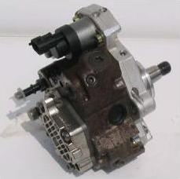

Bosch termékek
 

- VE forgóelosztó, mechanikus rendszerű
- VE – EDC forgóelosztó, teljesen elektronikus szabályozással
- A – M – MW – P soros rendszerű, mechanikus szabályozással
- EDC – P soros adagoló, elektronikus mennyiség szabályozással
- EDC – H soros, teljesen elektronikus szabályozással
- CP-1, CP-3 Common Rail szivattyúk